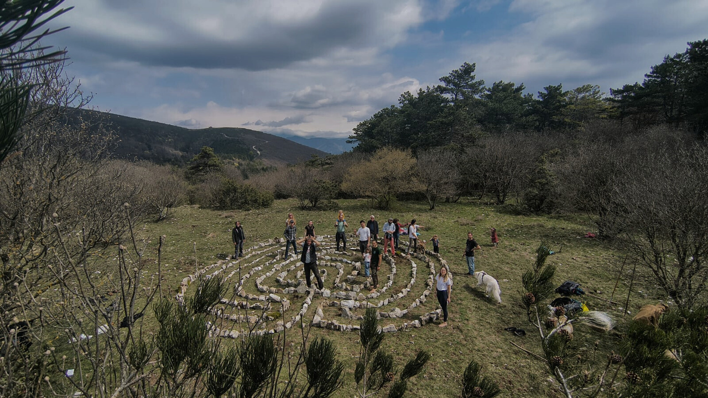
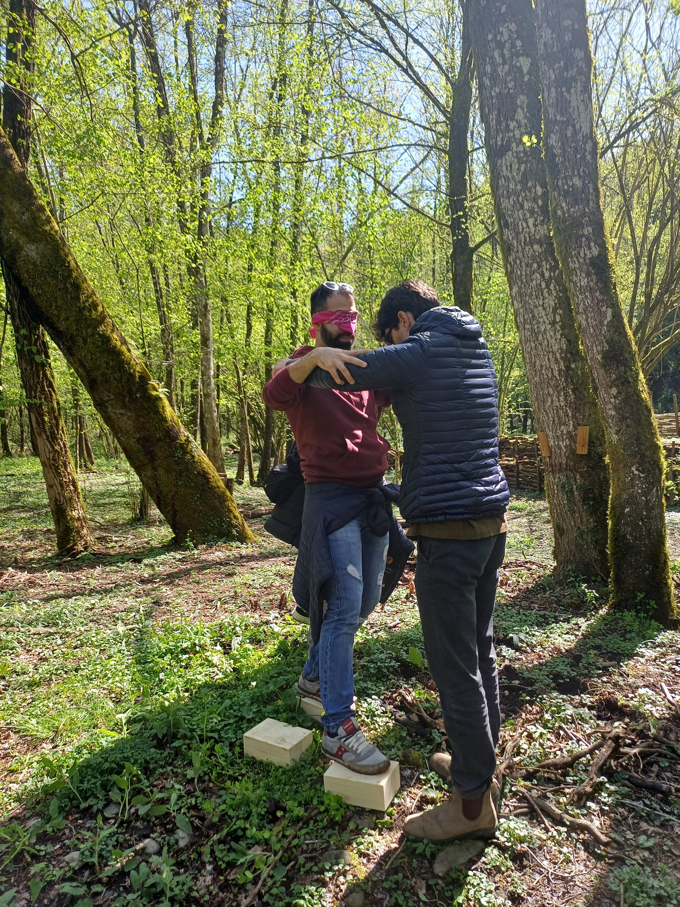
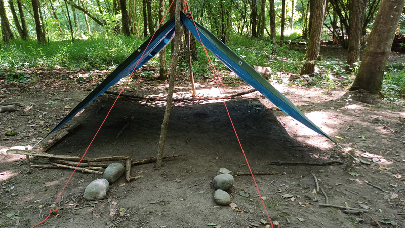
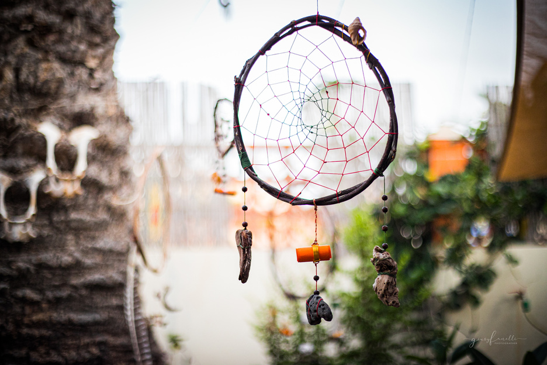
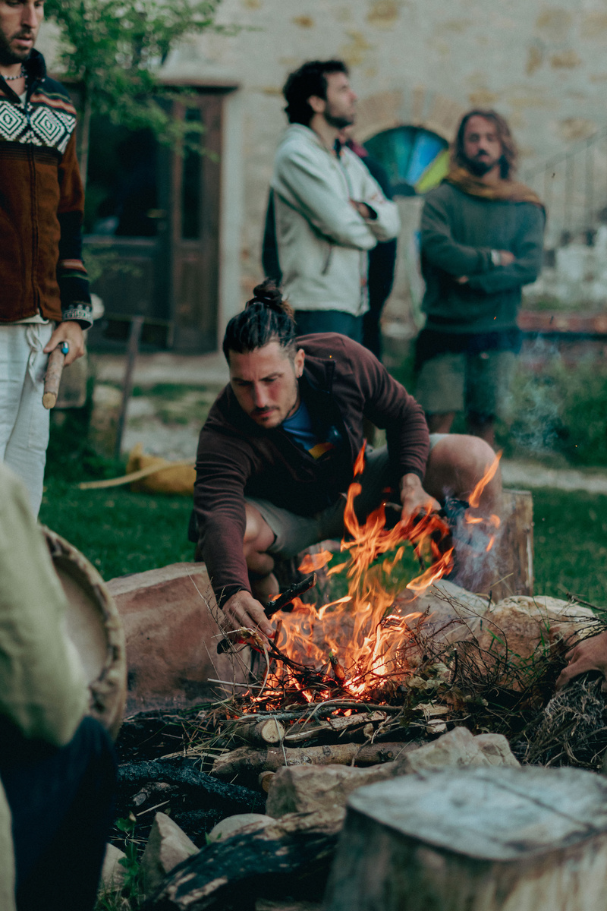
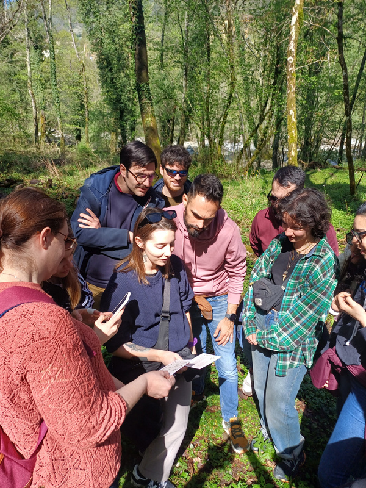
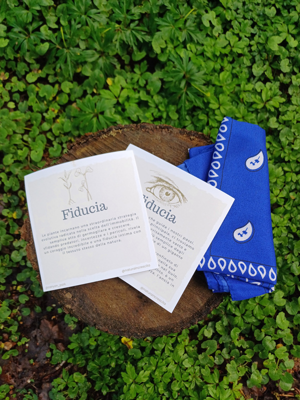
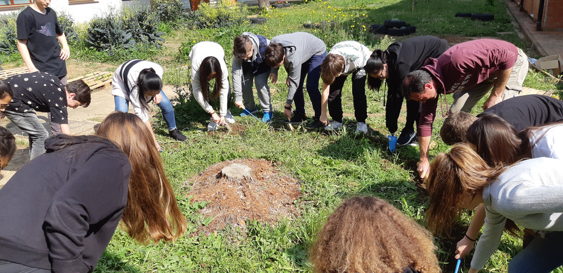
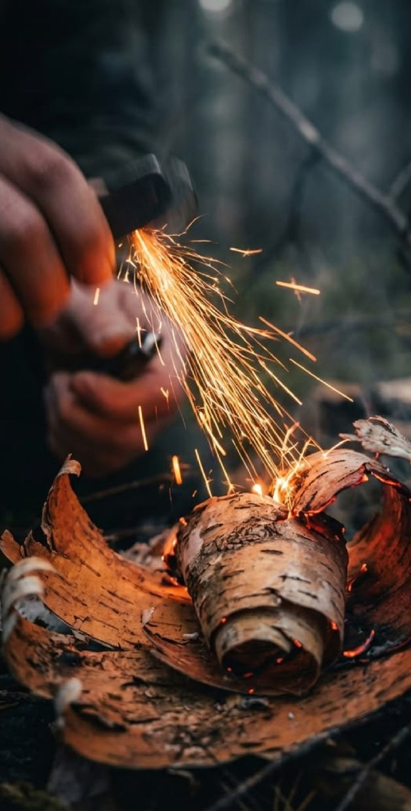
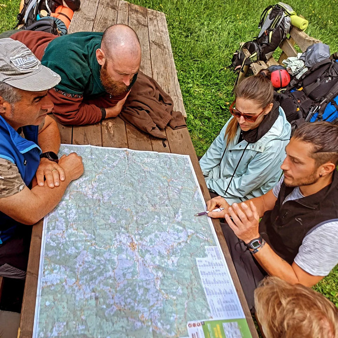

Step away from the city.
Into the wild side of Florence.
We guide international students through outdoor adventures designed to build connection, spark collaboration and create memories that last: with each other, with themselves, and with nature.






New culture. New language.
New people.
Classes, deadlines, group projects and a whole new city to figure out. Even in the middle of all this beauty, it’s easy to feel disconnected: from yourself, from the group you’re with, from your “why”.
That’s where nature comes in.
Through play, challenge and reflection, our nature-based team days help students:
Feel part of something real
Be seen and heard by the group, away from roles and labels.
Practice active listening and collaboration
Through games, challenges and conversation, outdoors.
Reconnect, in a whole new way
With themselves and with others, away from screens.
A day without screens,
without pressure.
Laugh around a fire, hike through the forest, and actually talk to the people in your program: not in class, but under the trees.
Real connections are
strengthened in nature.
Nature · adventure · exploration · ecosystems
Vision
To inspire students to become more empathetic, aware and connected, as individuals and as a group, by stepping outside their usual routines and into the natural world.
Mission
We create outdoor experiences that combine adventure, teamwork and personal reflection to strengthen group dynamics and help students feel more grounded, open and united.
Approach
We design every experience to engage the mind, the body and the emotions: games, physical challenges, nature connection and guided reflection.
Through games, physical challenges, nature connection and guided reflection, students get the chance to:
- Discover each other beyond roles
- Step out of comfort zones
- Grow together through shared adventure
Because a group that bonds in nature thrives in daily life too.
No lectures.
No simulations.
Our outdoor team experiences are based on experiential learning: learning by doing, feeling, moving and reflecting.
In the forest, the usual labels disappear. Just real group dynamics, real collaboration, and real memories.
Each activity is a chance to strengthen communication, navigate uncertainty together, make group decisions, and support one another through a shared adventure.
In a time of online classes, fast-paced schedules and cultural distance, nature becomes the place to slow down, share real conversations, and rediscover the power of being fully present.
Outdoor experiences give your group a space to:
- Foster real connections beyond classroom roles
- Encourage collaboration and trust
- Promote personal growth and emotional resilience
- Build a stronger, more supportive learning community
Five experiences.
Pick one, or combine them.
Half-day or full-day programs. Each one can be adapted to your group, your calendar and your learning goals.
The Forest's Tribe
Transform your group into a tribe.
- The idea
- A full day to become something more than classmates: a tribe. Together you explore what it means to connect, collaborate and grow as a group.
- What happens
- The day starts with a symbolic totem: a hands-on ritual where the group defines the values and spirit it wants to bring. Then a tribal-style treasure hunt, maps in hand and clues to solve, where you need each other to move forward. In the afternoon the tribe splits into smaller clans to face real-world challenges in nature.
- What stays
- Stories are shared, wins are celebrated, and the vibe shifts from play to reflection. You leave with stronger bonds, a clearer sense of belonging, and memories that don't fade.
Dreamcatcher
A day to bring up dreams and goals.
- The idea
- Your group follows a symbolic path inspired by the Native American dreamcatcher: a metaphor for teamwork, intention and shared growth. Each phase explores a key aspect of collaboration, from how we communicate to how we overcome challenges together.
- What happens
- At the heart of the day is a creative task: building a collective dreamcatcher. Each person adds their own skills and ideas as threads, knots and elements. Every knot in the net represents a goal, and tying them makes visible how your group's efforts are connected.
- What stays
- Later you pause and reflect on the empty center: the space that catches what matters and lets go of what doesn't. What is holding us back? What are we ready to release? The dreamcatcher stays as a handcrafted reminder of what you built together.
The Forest Code
A sensory treasure hunt.
- The idea
- A different kind of adventure that turns the forest into a field of immersive challenges. Your team solves the mystery of a forest in crisis, where each stage reveals a piece of the story and of your group dynamic.
- What happens
- Three essential missions: look beyond what's obvious, trust each other fully, and communicate in a real, honest way. Each challenge blends physical movement with mental focus, and every step includes a moment of group reflection.
- What stays
- In the end the group uncovers a final “treasure”, a symbolic object that brings together everything you experienced: the value of collaboration and the power of authentic communication.
Labyrinthos
A journey inward.
- The idea
- Inspired by ancient labyrinths: not places to get lost, but paths to find yourself. Together you design and build a stone labyrinth on the forest floor, a single winding path that leads to the center and gently back out.
- What happens
- Walking it is simple, but the meaning runs deep. Each curve is a chance to slow down, let go of distractions and see things with fresh eyes. At the heart you pause, in silence, and leave a thought, a question or an intention. Then, step by step, you return.
- What stays
- The experience ends with a group circle where insights and emotions can be shared freely. The labyrinth remains on the earth: a visible trace of your passage.

We Are Forest
Let's plant a forest of collaboration and relationships.
- The idea
- A hands-on reforestation project that uses the forest as a metaphor for team dynamics and personal growth. In a forest, every element, from roots to tall trees, plays a vital role. In the same way, every team member brings unique strengths.
- What happens
- Interactive activities explore how natural systems evolve through ecological succession, a powerful analogy for how teams and communities grow over time. Planting trees together becomes a symbolic act: each sapling is a step toward a common vision.
- What stays
- A stronger sense of connection, trust and mutual respect. A group that has cultivated a small forest and a shared culture of growth, collaboration and care for the future.

Matteo Mancini
Environmental guide, outdoor experiential teacher.
- How I got here
- After leaving a stable job in the tech world to explore different countries and cultures, I chose to radically change my life when I came home.
- What I do
- I design and lead outdoor experiences for groups of all kinds, from companies to adults and children, with an experiential and holistic approach. Every year I add to my toolkit: group facilitation, permaculture, team building, survival techniques, experiential education.
- What I believe
- In nature we rediscover what is often missing in modern life: active listening, trust, collaboration. In these shared experiences, students can build stronger, more creative and more resilient bonds.
Designed around
your students’ needs.
Every group is unique, and so is every experience we design. Whether you want a single activity or a full-day or multi-day retreat, we work with you to co-create something both meaningful and memorable.
Based on your academic focus
- Environmental Studies: learn through hands-on ecological projects
- Leadership & Communication: build teamwork and collaboration skills
- Psychology & Well-being: explore self-awareness and resilience in nature
- Cultural Immersion: connect with local landscapes and communities
Based on your available time
- Half-day experiences (3–4 hours)
- Full-day retreats (6–8 hours)
- Multi-day immersive programs with deeper group process and nature connection
Based on your group’s needs
- First-week team building to help students bond
- Mid-program activities to re-energize and reconnect
- Closing experiences to reflect and celebrate shared growth
- Support for specific challenges: integrating new students, mixed cohorts, group tensions
A custom-designed outdoor experience can:
- Help your group bond more deeply
- Reinforce key learning objectives
- Give space for reflection and personal growth
- Make their time abroad even more meaningful
Real groups, real forest.

What if just one day outdoors could change how your students relate to each other?
Imagine a day that helps your group communicate better, collaborate with more trust, and work toward shared goals with new energy. It’s not about lectures or classrooms: it’s about learning by doing, outdoors, a short distance from Florence. Tell us about your group and we’ll write back.
Prefer to talk? Matteo Mancini · +39 366 718 7733 · abitareilsentiero@gmail.com. Programs are available in English and Italian.